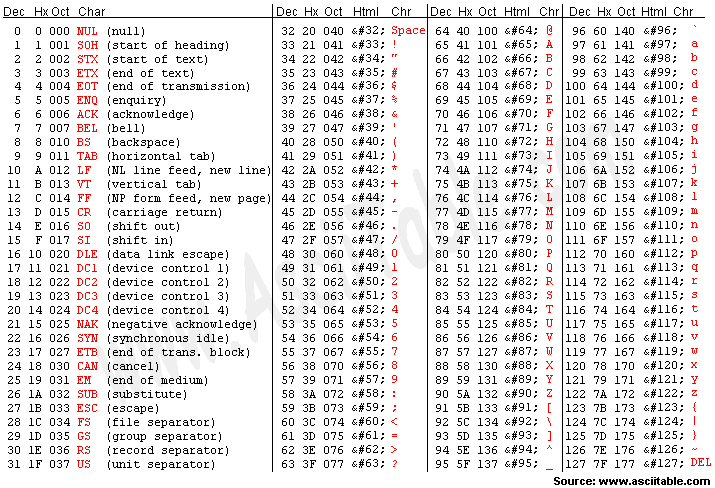
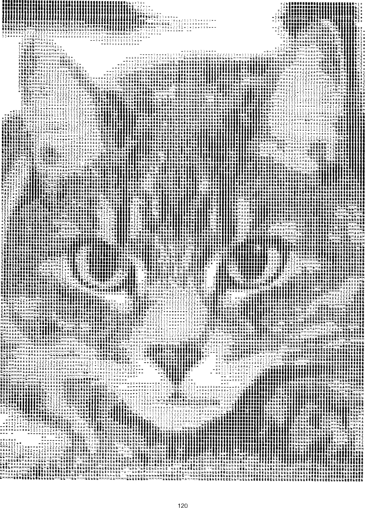

I have an ASCII chart so I know the combinations, but how come when I use alt and the numbers it doesn't show anything. Please tell me how to use ASCII.
Well, you're combining a number of things here. ASCII is a form of character encoding which is used by the computer to convert the letters of the alphabet (and what not) into bits and bytes used internally by the computer. The alt+#### keystroke thing is not based on ASCII encoding numbers. To use the alt numbers, you need to
a) first be using the right numbers
b) be typing them on the numeric keypad
c) make sure num lock is in the right setting.
a) first be using the right numbers
b) be typing them on the numeric keypad
c) make sure num lock is in the right setting.
ASCII is a computer basic basi computer language. bare to the bone. I learnt how numbers are processed... I cant remember. its something like:
Im finding the number 74
i have to use maths to subract it from 8 numbers... I think they are 128, 64, 32, 16, 8, 4, 2, 1
74-128=-54 - not possible to be positive, therefore a 0......0
74-64=10 - positive, there fore a 1...................................1
10-32=-22 - not possible to be positive, therefore a 0........0
10-16=-6 - not possible to be positive, therefore a 0.........0
10-8=2 - positive, therefore a 1......................................1
2-4=-2 - not possible to be positive, therefore a 0............0
2-2=0 - (tricky) it is counted as positive, co u can subract 1
0-1=-1 - not possible to be positive, therefore a 0.............0
so after this, the computer then reads 01001010 out as 74
complicated huh?
Im finding the number 74
i have to use maths to subract it from 8 numbers... I think they are 128, 64, 32, 16, 8, 4, 2, 1
74-128=-54 - not possible to be positive, therefore a 0......0
74-64=10 - positive, there fore a 1...................................1
10-32=-22 - not possible to be positive, therefore a 0........0
10-16=-6 - not possible to be positive, therefore a 0.........0
10-8=2 - positive, therefore a 1......................................1
2-4=-2 - not possible to be positive, therefore a 0............0
2-2=0 - (tricky) it is counted as positive, co u can subract 1
0-1=-1 - not possible to be positive, therefore a 0.............0
so after this, the computer then reads 01001010 out as 74
complicated huh?
Er, no, that's binary, a number system (that computers do indeed use as the base method of storing everything). Binary is a base-two number system, where as decimal is base-ten. In decimal, each extra digit left is worth ten (hence, base 10) times more than the one to its right (hence, 127 is 7 * 1 + 2 * 10 + 1 * 100); where x is the digit in the 'column' (to use a term) and n is how many places from the right it is (starting at 0), the overall value of the column is x * 10^n (x multiplied by [ten to the power of n]).*.
In binary, each extra digit is worth twice as much as the one to its right, and so you only have two possible numbers: 1 and 0 (hence, 1010 is 0 * 1 + 1 * 2 + 0 * 4 + 1 * 8 = 11 in decimal); the overall value of the column is x * 2^n..
Binary is a useful system for computers and such because it can be stored on anything that has two different states, like on/off, yes/no, pits/lands (in the case of CDs), etc.
I'd suggest that this way of working it out is easier than your mathemetical way: with 01001010, working from the right:
0 * 1 + 1 * 2 + 0 * 4 + 1 * 8 + 0 * 16 + 0 * 32 + 1 * 64 + 0 * 128
= 2 + 8 + 64
= 74
* feel free to ignore the italicised bits, they probably just complicate my explanation
In binary, each extra digit is worth twice as much as the one to its right, and so you only have two possible numbers: 1 and 0 (hence, 1010 is 0 * 1 + 1 * 2 + 0 * 4 + 1 * 8 = 11 in decimal); the overall value of the column is x * 2^n..
Binary is a useful system for computers and such because it can be stored on anything that has two different states, like on/off, yes/no, pits/lands (in the case of CDs), etc.
I'd suggest that this way of working it out is easier than your mathemetical way: with 01001010, working from the right:
0 * 1 + 1 * 2 + 0 * 4 + 1 * 8 + 0 * 16 + 0 * 32 + 1 * 64 + 0 * 128
= 2 + 8 + 64
= 74
* feel free to ignore the italicised bits, they probably just complicate my explanation
Thanks everyone. Ne♦♀⌂ <That was typed in ASCII.
Edit: Wow. you people sure went out of your way to look this stuff up.
Edit: Wow. you people sure went out of your way to look this stuff up.
Yeh, uh. No. That was not typed in ASCII.
That was not typed in ASCII.
THAT WAS NOT TYPED IN ASCII!
That was not typed in ASCII.
THAT WAS NOT TYPED IN ASCII!
Yeh, uh. No. That was not typed in ASCII.
That was not typed in ASCII.
THAT WAS NOT TYPED IN ASCII!
What? I used the Alt+numberpad. I used the chart and checked each of the things I typed and the number combination matched the symbol I got. You're really confusing me now.
ASCII is when you make a picture or image using letters and numbers.
ASCII is when you make a picture or image using letters and numbers.
Oh, okay.
Sorry about that.
ASCII is when you make a picture or image using letters and numbers.
O RLY?
Then why is it called "ASCII art"?
Zomg I figured out teh smiley! ☺
I... did I type my explanation of what the term 'ASCII' means in invisible ink? I don't think I did. ;(
I thought ASCII was what Jakel said. Art made out of letters, numbers, and symbols. Meh, here's a symbol chart thing.


Oh dear. Maestro is right, pretty much everyone else is wrong.
ASCII is the method, amongst other things, by which the keyboard communicates with the processor. It is a code where each individual symbol (printable ones like $ or non-printable ones like carriage return) is represented by a number.
ASCII art is pictures made with nothing but those encodeable characters.
Binary is a counting system in base 2 (normally nubers are counted in base 10) - it uses 1 and 0 only to make any number.
Alt Numbers are another type of encoding, similar to ASCII but different. Use the method described above to use them.
Sorted?
ASCII is the method, amongst other things, by which the keyboard communicates with the processor. It is a code where each individual symbol (printable ones like $ or non-printable ones like carriage return) is represented by a number.
ASCII art is pictures made with nothing but those encodeable characters.
Binary is a counting system in base 2 (normally nubers are counted in base 10) - it uses 1 and 0 only to make any number.
Alt Numbers are another type of encoding, similar to ASCII but different. Use the method described above to use them.
Sorted?